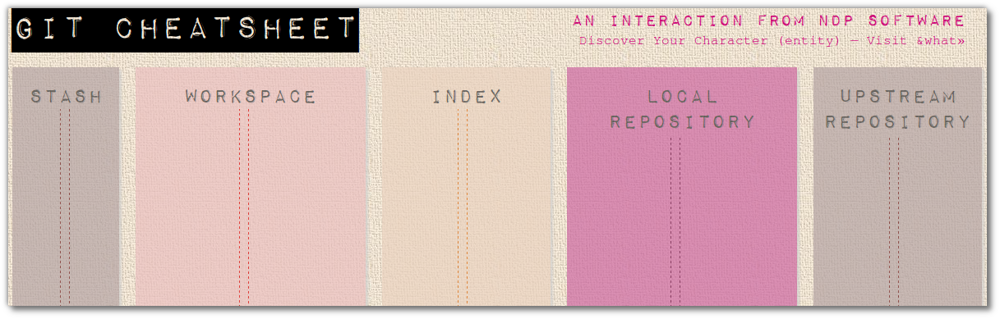

The local git workflow
To recap, we have our working copy of our files on our laptop. When we add those files using git, a copy is placed in what git calls Staging. This allows you to assemble several files for the commit.
As we have a local repository right there on our laptop, we can commit all the files added to the staging area. If you can add a series of small commits and do this often, it gives you a more detaled version history and gives you more points to jump back in time. Regular commits helps to reduce merge conflicts when working in teams and using smaller commits gives other developers lots of details about how the project has evolved.
In this visual representation you can see the different git stages in which commits can reside.

Understanding git add and the staging area

When you add a file, you are telling git that you want it to be part of the change you are going to commit.
Lets say you create a new file with 10 lines of content and then use git add filenname.ext to add it to git. Then you continue to add another 5 lines the contents of that file. If you do a commit without adding that file to git again, only the first 10 lines of content will be in that commit.
If you do a second git add filenname.ext before you commit, then all 15 lines of content will be included in the commit.
Having to add changes in this way helps you control exactly what makes up your commit without restricting the files you are working on. Please note that it is advisable to either git add & git commit often so that your changes form part of a meaningful history.
What has been added - What has changed (using diff)
Once you have added files to the staging area with git add, you can compare any changes made to files in your workspace. Using git diff you can see all changes or specifying a file will show only the differences in that one file.
git diff
git diff filename
You can also compare the files you have added to the staging area to those you have committed using the diff option —staging
git diff --staging
git diff --staging filename
Removing files from staging / index
You can remove a file you have put in staging (git add filename) using the git command reset
git reset --soft HEAD^
rolling back to the previous commit on the local repo
git reset HEAD~1
To remove a file from the index/staging
git rm --cached filename.txt
Commit your changes
Once you have staged files using the git add command, you can at any point make those files a commit (think a new version). The commit will contain all the files you added.
git commit -m "useful message describing the details of your commit"
The better commit messages you write the easier it is for others (and yourself) to understand what is going on in your project.
Working with commits - git log, git show
Once you have done a commit and there are no more changes in your working directory or staging area, then git status no longer tells you anything. This is where git log comes in.
git log
Git log shows you the history of the commits you have already made.
git log
By default, git log has a very basic output and shows you the commit number, author, date and commit message. You can add options to the git log command to get a much nicer and more useful output, even showing which commits have been pushed to one or more remote repositories.
git log --graph --oneline --decorate --date-relative
You can add this to your git configuration as an alias so you dont have to type it all the time
git config --global alias.lg 'log --graph --oneline --decorate --date-relative'
Blogs on this subject
git show
Git show displays the contents of a commit (description, files, tags, blobs, etc). By default it shows the log message and textual diff of the text that was modified in the commit.
For tags, it shows the tag message and the referenced objects.
The command takes options applicable to the git diff-tree command to control how the changes the commit introduces are shown.
[TODO] what are the options for git show
git show
git show HEAD
git show 1234567
git show tag-name
Using git show without specifying a commit number or tag will show you the latest commit from the branch you are currently in. This is usually the same information in git show HEAD as HEAD is a special tag that always points to the latest commit.
Back to top… | Next: Chapter 08: Conflict Resolution | Workshop homepage